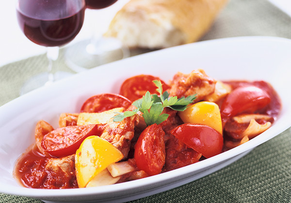

トマト with 鶏肉

トマトたっぷりカチャトーラ（鶏肉のトマト煮）
調理時間：20分、エネルギー：382kcal、塩分：1g
パスタの他、ご飯にも合う１品です。
材料（4人分）
- カゴメ 高リコピントマト
- 4個
- 鶏もも肉
- 1枚(350～400g)
- パプリカ
- 1個
- エリンギ
- 1パック
- 玉ねぎ
- 1/2個
- にんにく
- 1片
- オリーブオイル
- 大さじ1
- カゴメ基本のトマトソース(295g)
- 1缶
- 白ワイン
- 1/4カップ
- ローリエ
- 1枚
- 塩
- 小さじ1/2
- こしょう
- 適宜
作り方
- 1
- トマト、パプリカ、エリンギ、玉ねぎは一口大に切る。鶏肉は一口大に切り、塩（分量外）・こしょうを振っておく。
- 2
- フライパンを熱し、つぶしたにんにくとオリーブオイルを入れて、弱火で炒め香りを移す。
- 3
- ②に鶏肉を入れて炒め、焼き色をつけたら玉ねぎ、エリンギ、パプリカの順に加えて炒め合わせる。
- 4
- ③に基本のトマトソース、白ワイン、ローリエを加えて10分程煮込む。
①のトマトを加えて火を通し、塩・こしょうで味をととのえたら出来上がり。